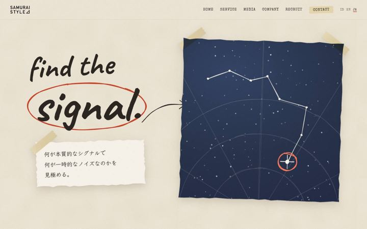
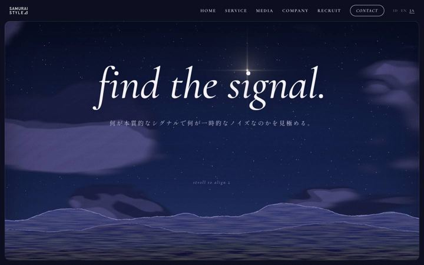
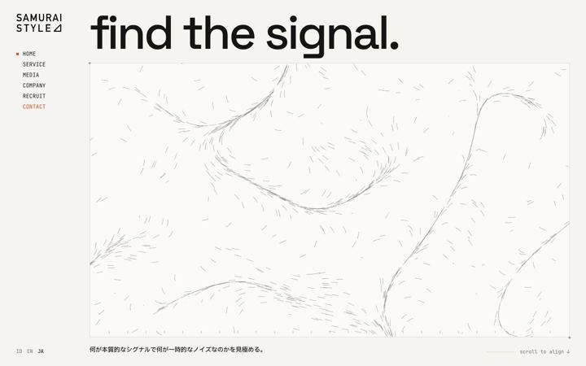
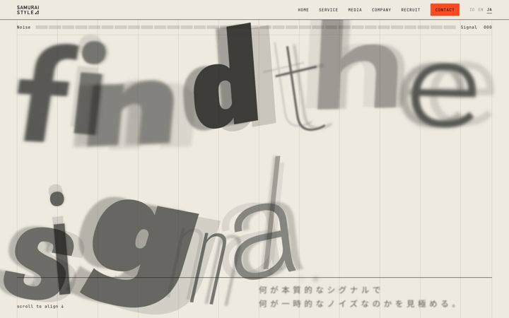
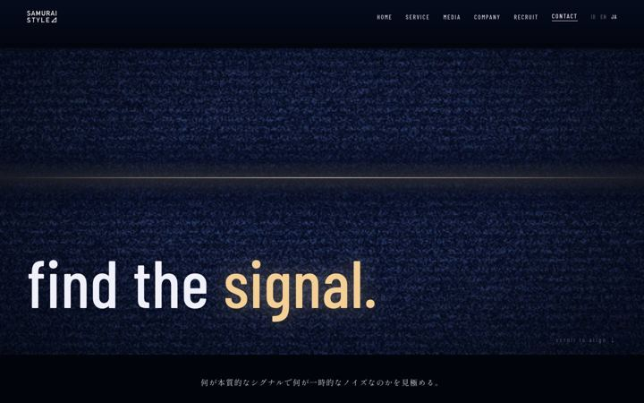

黒い宇宙をやめ、生成りの紙の上に「切り貼りした紺色の紙の星図」・マスキングテープで貼った写真・破れた紙片・手描きの丸囲みや下線（rough.js）で全節を組んだ。STORYはスクラップブック、特徴は罫線入りの情報カード、事業はポラロイド、問い合わせは黄色いリーガルパッド、フッターはクラフト紙。

参考にしたサイト
- Hello Monday 白地にインクの揺れた線画だけを置く余白の取り方と、線の太さ（細めの単線＋少しのベタ）。特徴カードのアイコンの描き方に写した
- HEY 製品画面の「Imbox」をマーカーで手描きの楕円で囲む強調と、節の区切りの波線（〰）。FVの signal. の赤い丸囲みと節の間の波線に写した
- Basecamp 少し傾けて重ねたスクリーンショットに、手描きの曲がった矢印を添える注釈の付け方。FVの signal. から星図へ伸びる矢印と、写真を傾けて重ねる配置に写した
黒い宇宙ではなく、WebGLで毎フレーム描く油彩・グワッシュ調の空が、スクロールに合わせて藍の夜→群青→桃色の夜明け→金の朝へ移ろう。『signal.』の i の点が一番星として光り、ストーリーの『Signal』でも同じ星が灯り、夜明けとともに日の光へ置き換わる。カード・写真・フォームは空の上に置いた水彩紙と額縁として扱う。

参考にしたサイト
- Railway FVを左右16px・角丸18pxの額で囲み、外側の暗い余白にヘッダーを置く構成／額の中は描いた夜空で、雲は暗い縁取り＋明・中・影の3段の塗り分け（実測：空 #131c2b〜#1b2838、雲の影 #3a3144・明部 #7b5757）／中央上1/3にセリフ体の見出し、額の下端に地形。これをFVとフッター（同じ稜線の朝版）に写した
- Mercury 夕暮れの風景で、見出しの背後〜下から暖色の光がにじみ、画面の四隅に向かって青く沈む階調（実測：左上 #948079 → 下 #2c3b52）。太陽のにじみ光と四隅の減光（ビネット）に写した
黒い宇宙と星をやめ、生成りの紙の上で鉛筆のような細い線と点を描く案。左に縦のナビを置き、各節の絵はすべてコードで描く。スクロールするとノイズの線がまとまって1本の朱色の線（信号）になる。STORYは同じ点の群れが7場面で7つの形に組み替わり、特徴4つ・事業カードの地・メンバーの網点写真・問い合わせの波形・フッターの走査線まで、すべて違う生成の絵にした。

参考にしたサイト
- poolside 実際に開いて測った値を写した：地の色 rgb(251,250,246)、アクセントは1色だけ、ラベルは JetBrains Mono、左に縦のナビ。絵は細枠のパネルの中に入れて文字とは分ける。カードは上に線の絵・下に文字。等高線の線上に色付きの四角を置く手法と、フッターで社名を横線の束で描く手法も写した
- Physical Intelligence 生成りの地に等幅の小さな文字を置き、色をほとんど使わない静かな余白の取り方
- lusion 絵のパネルの角に付く「＋」の目印（製図の位置合わせの印）
絵・写真・宇宙をやめ、画面幅いっぱいの可変フォント（Roboto Flex）と12列の格子線だけで見せる。FVは崩れた『find the signal.』がスクロールで揃い Signal だけ信号色になり、各節の見出しは字幅25→151・太さ100→900へ伸びる。色は生成り×墨＋信号色1つ、写真と動画は白黒・小さい同寸の枠で格子の中に置く。

参考にしたサイト
- Instrument 画面幅93%（左右48px）を埋める巨大ワードマーク、見出し24.4vw・行間0.85・字間-0.05em、1px・不透明度12%の罫線と小さなモノスペースの節ラベル（実測 measure.json）
- ABC Dinamo 可変フォントの軸（wdth/wght/slnt）を動かして同じ語の形を変える見せ方。見出しの字幅・太さのスクロール変形とNoiseの文字の揺れに使用（実測：Favorit wdth75.5/wght419/slnt-9.96 など）
- teenage engineering 文字の行ごとに細い罫線を引く組み方と、小さく端正な日本語の本文ブロック（FVの揃った後の基線罫・節ラベル行）
- basement.studio 見出し5.3〜6vw・行間0.89・字間-0.04em の詰めた組みと1pxの区切り線、黒地にアクセント1色だけを差す配色
- Stoke Space 字幅の広い大文字ゴシック（節見出しの最終形 wdth151/wght900）
節ごとの見出し＋カード・箱の並びをやめ、FV〜メンバーまでを「画面いっぱいの絵1枚＋その上に直接重ねた字幕」の場面22個でつなぐ。次の場面は画面に固定されたままフェードで重なり、絵はゆっくり寄る。地は深い紺の夜、文字は小さな明朝の字幕と大きな見出しの対比。

参考にしたサイト
- SpaceX 場面＝画面の高さ(900〜941px)を1単位に積む作り。実測した暗がり（下＝50%から透明→100%で不透明、左右＝50%から→端で0.8、上＝0.5→0を300px）、見出しの位置（FVは左60px・下から約26%、本文の場面は左100px）、見出しの級数と字間（48〜80px・大文字・+0.02em）をそのまま写した
- Sierra Space FVの下端に光る地球の縁（地平線の弧）と、特徴の場面の文字位置（左170px＝11.8vw・縦の37%付近）と左端から半分までの放射状の暗がり（0%で不透明→50%で0.32）を写した